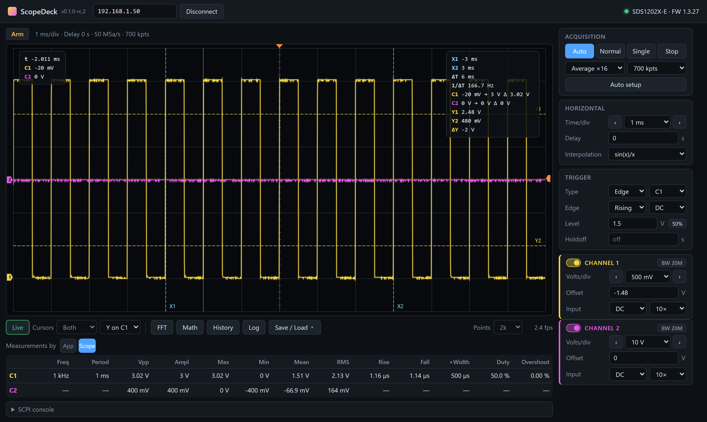
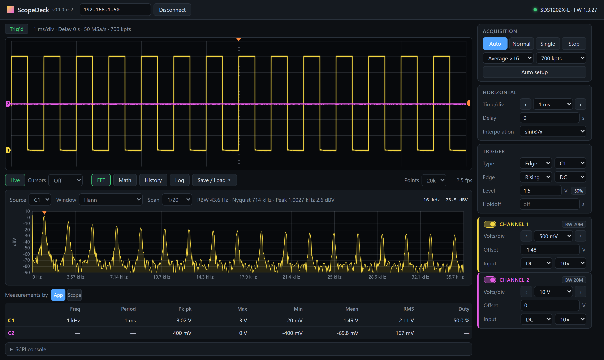
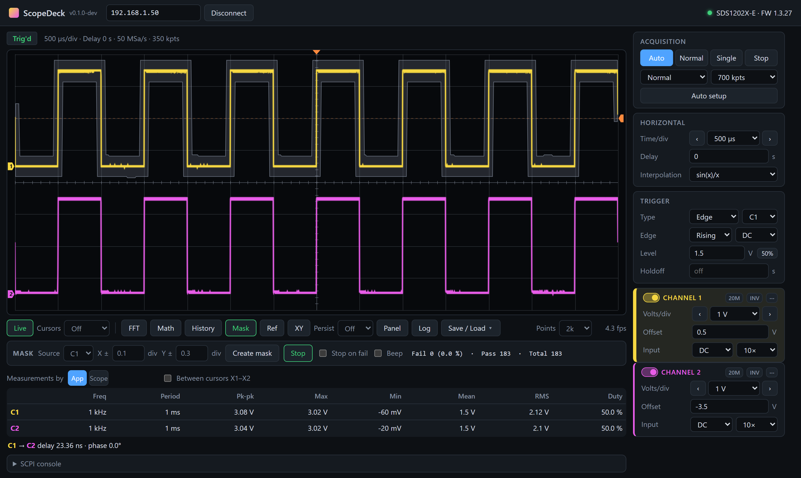
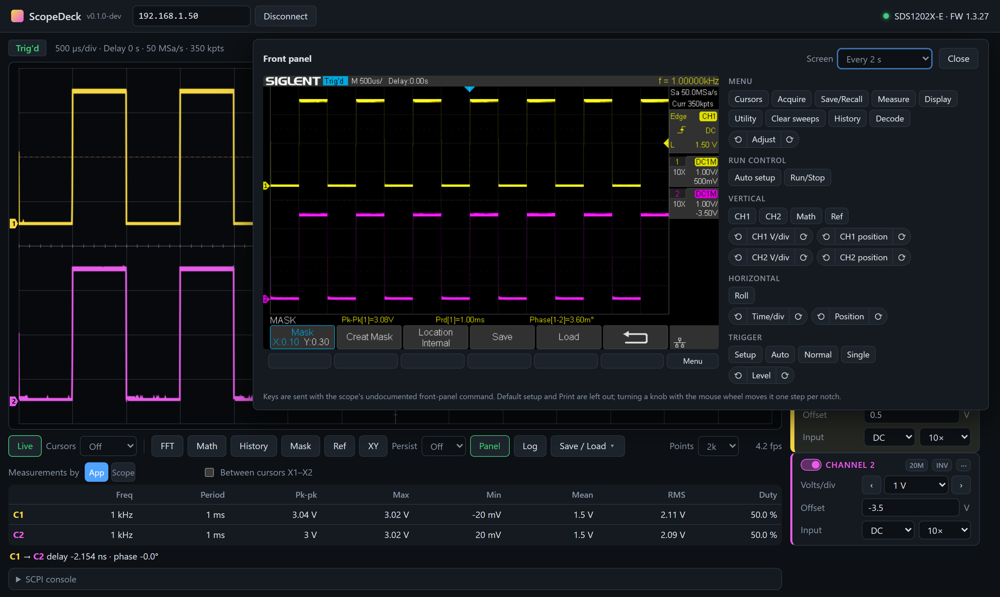

A modern, open-source replacement for EasyScopeX. Control your Siglent SDS1000X-E oscilloscope over the network — no VISA drivers, no LabVIEW.
Desktop app for Windows, macOS and Linux · or server + browser UI · MIT license

Everything you use day to day, in one fast window. Tested on an SDS1202X-E with firmware 1.3.27.
Both channels at up to ~20 fps over LAN, with ground, trigger position and trigger level markers. Slow timebases are drawn as a min/max envelope instead of aliasing.
Run mode, auto setup, acquisition mode and averaging, memory depth, timebase, delay, V/div, offset, coupling, probe and 20 MHz limit per channel.
Edge with holdoff and a 50 % button, pulse width, slope, interval, runt and dropout with shorter/longer/between/outside conditions, video, window and pattern.
A+B, A−B, A×B, A÷B, d/dt, ∫dt and √ as an extra trace — with cursors, measurements, FFT and CSV export.
Step or play through the scope's stored acquisitions with timestamps and export every frame.
Save the scope's setup to a file and load it back, or use the scope's 20 setup memories.
Drag or scroll on the plot; the zoomed part is fetched from the scope at up to full resolution.
Freeze traces or load CSVs as overlays, plot C1 against C2, and add afterglow.
Draggable time and voltage cursors with ΔT, 1/ΔT, ΔV and each channel's value at the cursors.
Spectrum in dBV with Hann, Hamming, Blackman-Harris, flat-top or rectangular window, zoom and peak marker.
Fast app-side measurements every frame, or the scope's own: rise/fall time, overshoot, pulse width and more. Between cursors, with delay and phase between channels.
Download all samples — up to 14 million per channel — as CSV. Log measurements over time.
Grab the scope's own screen as PNG, export the displayed waveform as CSV or the plot as PNG.
The scope's live screen with its soft keys, buttons and knobs — for the menus that have no remote command.
Build a mask from a good waveform, then count passing and failing waveforms; stop or beep on a fail.
Record what you change on the scope — settings, keys, SCPI commands — add pauses, and replay it for repeatable tests.
Send any command from Siglent's programming guide and see the response.



Connect the oscilloscope to your network and note its IP address (shown in the LAN settings of the Utility menu).
ScopeDeck-…-windows-x64-standalone.zip from Releases.ScopeDeck.exe.ScopeDeck-…-macos-arm64.zip (Intel: -macos-x64) or ScopeDeck-…-linux-x64.tar.gz.ScopeDeck.app to Applications and confirm the first start under Privacy & Security → Open Anyway. Linux: install WebKitGTK (libwebkit2gtk-4.1-0) and run ScopeDeck/ScopeDeck.The scope talks to one program at a time — close EasyScopeX before connecting.
ScopeDeck uses plain SCPI over TCP (port 5025), which the Siglent SDS1000X-E series supports out of the box.
| Model | Status |
|---|---|
| SDS1202X-E | Tested (firmware 1.3.27) |
| SDS1102X-E, SDS1104X-E, SDS1204X-E | Expected to work — same command set; reports welcome |